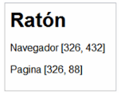

PRACTICO 5 JavaScript
Crear una página HTML con el código Javascript que sea necesario de manera que:
- Al mover el ratón en cualquier punto de la ventana del navegador, se muestre la posición del puntero
respecto del navegador y respecto de la página, desde la esquina superior izquierda

Se debe visualizar en tiempo real a medida que el mouse se mueve.